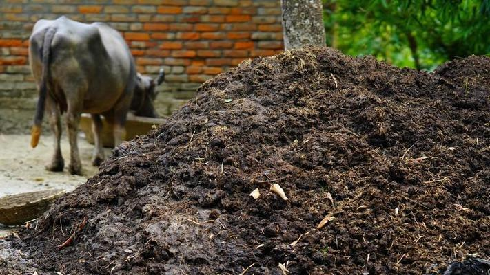
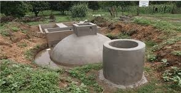
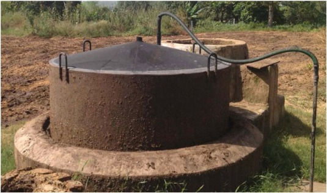
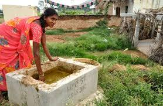
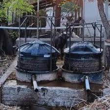
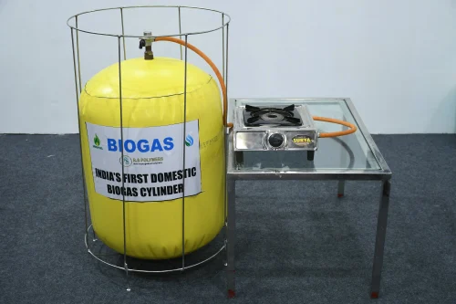
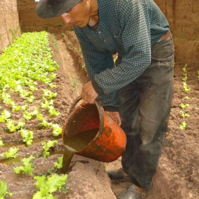

முகப்பு
எங்களைப் பற்றி
கூறுகள்
அமைப்பு வழிகாட்டி
மொழி
தமிழ்
ENGLISH
செயலியை பெற
சிறிய உயிர்வாயு ஆலைக்கான அமைவு வழிகாட்டி
முகப்பு
அமைவு வழிகாட்டி
சிறிய உயிர்வாயு
ஆலைக்கான அமைப்பு ஓட்டம்
தள தேர்வு
கரிமக் கழிவுகள் (எ.கா., கால்நடை உரம், உணவுக் கழிவு) மூலத்திற்கு அருகில் மற்றும் நல்ல காற்றோட்டம் உள்ள இடத்தைத் தேர்வு செய்யவும்.
இப்பகுதியில் சரியான வடிகால் மற்றும் தீவிர வானிலை நிலைகளிலிருந்து பாதுகாப்பை உறுதி செய்யவும்.

டைஜெஸ்டர் நிறுவல்
உங்கள் ஆலைக்கு தேவையான அளவு மற்றும் விவரக்குறிப்புகளுக்கு ஏற்ப பயோகாஸ் டைஜெஸ்டரை (கரிம கழிவுகள் உடைக்கும் முக்கிய அறை) அமைக்கவும்.
கரிமக் கழிவுகளை ஊட்டுவதற்கான உள்ளீட்டுக் குழாயையும், கழிவுநீருக்கான வெளியீட்டுக் குழாயையும் (பயன்படுத்தப்பட்ட பொருள்) பாதுகாப்பாக இணைக்கவும்.

எரிவாயு சேமிப்பு அமைப்பு
டைஜெஸ்டரில் உற்பத்தி செய்யப்படும் உயிர்வாயு சேமிக்கப்படும் இடத்தில் கேஸ் ஹோல்டர் அல்லது சேமிப்பு தொட்டியை நிறுவவும்.
எரிவாயு கசிவைத் தடுக்க தொட்டி சரியாக மூடப்பட்டிருப்பதை உறுதிசெய்யவும்.

உள்ளீடு பொருள் ஊட்டுதல்
உள்ளீட்டு குழாய் மூலம் கரிமக் கழிவுகளை டைஜெஸ்டரில் தவறாமல் ஊட்டவும்.
செரிமான செயல்முறையை மேம்படுத்த உலர்ந்த மற்றும் ஈரமான பொருட்களின் சீரான உள்ளீட்டை பராமரிக்கவும்.

டைஜெஸ்டர் ஆபரேஷன்
கரிமப் பொருட்கள் செரிமானத்தில் சில நாட்கள் அல்லது வாரங்களில் சிதைவதற்கு அனுமதிக்கவும்.
சீரான செரிமானம் மற்றும் வாயு உற்பத்தியை உறுதிப்படுத்த, டைஜெஸ்டர் உள்ளடக்கத்தை அவ்வப்போது கிளறவும் அல்லது கலக்கவும்.

உயிர்வாயு சேகரிப்பு
கழிவுகள் உடைக்கப்படுவதால், உயிர்வாயு உற்பத்தி செய்யப்பட்டு எரிவாயு ஹோல்டரில் சேமிக்கப்படும்.
சமையல், விளக்குகள் அல்லது மின் உற்பத்தியில் பயன்படுத்த எரிவாயு எடுக்கப்படலாம்.

கழிவுநீர் மேலாண்மை
எஞ்சியிருக்கும் குழம்பு (செரிமானம்) என்பது கரிம உரமாகப் பயன்படுத்தக்கூடிய ஊட்டச்சத்து நிறைந்த துணைப் பொருளாகும்.
டைஜெஸ்டருடன் இணைக்கப்பட்ட ஒரு அவுட்லெட் குழாய் மூலம் கழிவுநீரை பாதுகாப்பாக அப்புறப்படுத்தவும் அல்லது பயன்படுத்தவும்.
